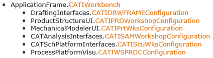
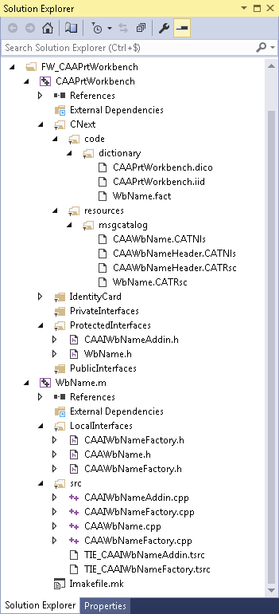

In the Solution Explorer, right click the project named with the framework name, that is, NOT the node prefixed with FW_, and containing the framework to which you want to add a module for the workbench.
In the contextual menu, point to Add, and click
 New Item.
New Item.
The Add New Item dialog box opens.
In Installed, click the arrow in front of 3DS Templates to expand its contents, if not yet expanded.
Click CATIAV5.
The CATIAV5 installed templates are displayed in the central pane.
In the central pane, click CATWorkbench.
In the Name box, type the name you want to assign to the workbench.
Warning: This name is
used to create the test file name. Bear in mind that:
|
Click Add.
The 3DS - New Workbench dialog box opens.
In the Workbench Name box, the name of the workbench is displayed for possible modification. Add the prefix you intend to input in the third box.
| Important: Note that the prefix you are prompted to type in the third box should also prefix the workbench name, to use this prefix for all the created files, folders, classes, and interfaces. |
In the associated workshop list, select the workshop into which you want to include the workbench.
The modelers, workshops, the documents they manage, the associated workbench interfaces, and the frameworks to include in the framework's identity card as Public prerequisites are:
| Modeler | Workshop | Document | Interface | Framework |
|---|---|---|---|---|
| Part | PrtWks | CATPart | CATIPrtWksConfiguration | MechanicalModelerUI |
| Product | PRDWorshop | CATProduct | CATIPRDWorkshopConfiguration | ProductStructureUI |
| Drafting | DRWFRAME | CATDrawing | CATIDRWFRAMEConfiguration | DraftingInterfaces |
| Analysis | SAMWorkshop | CATAnalysis | CATISAMWorkshopConfiguration | CATAnalysisInterfaces |
| Process | WSPROC | CATProcess | CATIWSPROCConfiguration | ProcessPlatformVisu |
| Schematics | ScuWks | CATDrawing | CATIScuWksConfiguration | CATSchPlatformInterfaces |
When a workshop is selected, the interface to implement is displayed below the list, as well as the framework to declare as a Public prerequisite which is displayed between square brackets.
You can find the documentation of these interfaces are part of your installation in the C++ API documentation:
-
Open the C++ API reference documentation
-
Click Class Hierarchy.
-
Scroll down of find the CATIWorkbench interface.
These interfaces derive from CATIWorkbench.

In the Generated class prefix box, type the prefix for the classes to create, namely your brand trigram.
Note that you should also add this prefix in front of the name of the workbench in the first box Workbench Name.
Click Finish.
The workbench module and associated files are created and the
Solution Explorer is updated.
Assume that the workshop is PrtWks, the workshop' workbench interface to implement is CATIPrtWksConfiguration, the framework is CAAPrtWorkbench, the workbench name is WkbName , and the prefix is CAA. The framework includes now the following:
| Folders and Files in the Solution Explorer | Description | |||||||||||||||||||||||||||||||||||||||||||||||||||||||||||||||||||||||||||||||||||||||||||||
|---|---|---|---|---|---|---|---|---|---|---|---|---|---|---|---|---|---|---|---|---|---|---|---|---|---|---|---|---|---|---|---|---|---|---|---|---|---|---|---|---|---|---|---|---|---|---|---|---|---|---|---|---|---|---|---|---|---|---|---|---|---|---|---|---|---|---|---|---|---|---|---|---|---|---|---|---|---|---|---|---|---|---|---|---|---|---|---|---|---|---|---|---|---|---|
|
 |
|
|||||||||||||||||||||||||||||||||||||||||||||||||||||||||||||||||||||||||||||||||||||||||||||
Refer to the use case Creating a Workbench which describes these files and how to customize them to add commands to the workbench.